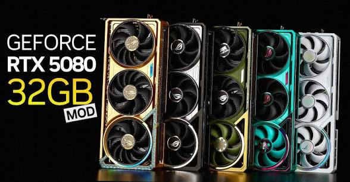

일단 중국쪽 ai업계에서 아스트라 급 ai개발 발표하라는 지시 일괄하달됬고, 덕분에 개발용으로 5090(중국용 5090D v2는 중국이 수입금지때림)수입이 과열상태임.
하지만 전세계에서 매집한 양으로도 현재 심각한 공급부족으로 중고매집하는 금액이 계속올라가는중(현재 들리기로는 750~800만원임)
그래서 대책으로 나온게 5090보다 하위칩셋이지만 5080에 클램쉘로 32기가 탑재하는 개조인데, 작년에 이미 한번 시도했지만 당시 가성비(그때 5090이 대략 500-600만원 5080이 200만원초반)가 안좋아서 패기됬던걸 재개량해서 생산하고있다고함.
문제는 그개조에 들어가는 VRAM수급인데 그래서 지금 매집중인게 5070TI 5080이라함
5060TI 16긱은 사실상 단산상태여서 매집자체가 불가능하고 그다음이 70TI 80임
9070XT쪽도 개조를 시도했지만, 돚거한 모델(...)이 대부분 엔비디아 카드로 개발된 LLM이거나 중국쪽 개발인력도 CUDA에 최적화되어있어서 어쩔수없다함
문제는 지금 미친 반도체 아마게돈으로 컴퓨터 부품 혹은 조립이 씨가마른 소매라인을 통해서 당장 현금지급으로 어마무시하게 물량을 빨아들이고있고함
당연히 정식수출이아니고 매입후 밀반출이고, 추석시즌(중국 중추절) 대규모 중국유학생 귀국을 통해서 나간다는 소문이 지배적임
매출이 씨가 말라서 현금 급한 판매상을 무작정 욕할수는 없는데, 이제 5080 5070ti 즉 QHD용 카드도 보기힘들어질지도
한줄요약 : 아 참고로 일본쪽은 엔저로 이미 매물 다빨렸다함. 겜붕이들아 그냥 폰게임이나 클라우드게임 패스나 지르자

그래서 360하던게 1000만원대갔잖아ㅋㅋ